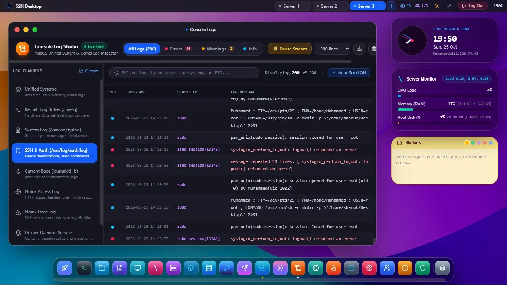

📜 Remote Log Analysis & Grep
Stream and filter remote log files (/var/log/syslog, nginx, auth.log). High-performance regex grep, timestamp filtering, and error highlights.

What is this Application & Why Do You Need It?
The Remote Log Analysis & Grep Engine is a dedicated log viewer for Linux servers. It allows you to tail, stream, search, and analyze system and application logs (/var/log/syslog, nginx/access.log, auth.log, Docker logs) with high-speed regex filtering and colorized severity levels.
Tailing logs in the terminal using tail -f | grep error is cumbersome: you cannot easily pause the stream, highlight keywords, or filter by timestamp. Cloud log platforms like Datadog or Papertrail require installing agents and charging per gigabyte. SSH Desktop gives you local client-side speed with zero server costs.
🖥️ Interface Overview & Visual Controls
/var/log/syslog, /var/log/nginx/access.log, /var/log/nginx/error.log, /var/log/auth.log, Docker container logs). The top toolbar features a Real-Time Regex Filter Bar, Severity Filter Buttons (All, Errors, Warnings, Info), Pause/Resume Stream, and Clear Buffer. The main log viewer color-codes timestamps, IP addresses, HTTP status codes, and stack traces.
Key Capabilities & Features
- Live Real-Time Streaming: Stream active logs with auto-scroll and pause-on-hover.
- High-Speed Regex Grep: Filter gigabyte log streams instantaneously using Rust-powered regex matching.
- Colorized Severity Highlights: Automatically detects and highlights ERROR, WARN, INFO, and FATAL lines.
- Multi-File Aggregation: Watch multiple log files simultaneously in synchronized split tabs.
- Log Export & Bookmark: Export filtered log subsets to disk and bookmark key timestamps for investigation.
📋 Prerequisites & Remote Host Requirements
- Read access to log files in /var/log/ or permissions to run journalctl / docker logs.
- Sudo privileges if viewing restricted logs like /var/log/auth.log.
Step-by-Step How-To Tutorial
1. Selecting a Log Source
syslog, auth.log, nginx access/error) or enter a custom log path (e.g. /var/log/my-app/app.log).
2. Filtering with Keywords and Regular Expressions
HTTP 500 or Failed password). The view filters immediately, displaying only matching rows while retaining context.
3. Pausing and Inspecting Stack Traces
💡 Pro-Tips & Best Practices
- High-Speed Regex Filtering: Type regular expressions directly in the search bar (e.g.
status=(500|502)orFailed password) to filter through millions of lines in milliseconds. - Live Tail with Pause: Click "Pause Stream" while troubleshooting an active issue to freeze the screen and inspect error details without new incoming log entries scrolling past.
- Highlight Keywords: Add custom highlight keywords (e.g.
FATAL,CRITICAL,Exception) with custom background colors for instant visual alerting. - Export Filtered Logs: Filter down to a specific customer incident and click "Export Filtered" to save an error report as a CSV or text file.
Under the Hood: Linux Commands & Architecture
Runs tail -n 500 -F <file> over an SSH channel. The Rust backend parses incoming lines with zero memory allocation, applying regex filters before rendering into virtualized DOM lists.
tail -n 500 -F /var/log/*, grep -E, journalctl -n 200 -f
⌨️ Keyboard Shortcuts & Productivity Tips
| Action / Function | Shortcut / Key Sequence |
|---|---|
| Pause / Resume Live Stream | Space |
| Focus Search / Regex Filter | Cmd/Ctrl + F |
| Clear Log Buffer | Cmd/Ctrl + Shift + C |
❓ Troubleshooting & Frequently Asked Questions
Cannot read /var/log/auth.log: Permission denied
Security logs on Debian/Ubuntu are restricted to root or the adm group. Add your SSH user to the adm group (sudo usermod -aG adm $USER) or connect with sudo privileges.
Try SSH Desktop Free
Experience the macOS-inspired visual desktop for Linux servers. Hardware-accelerated terminal, dual-pane SFTP, Docker GUI, and background tunnels — 100% agentless.